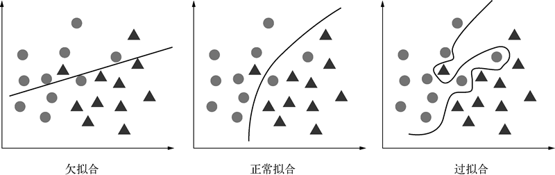
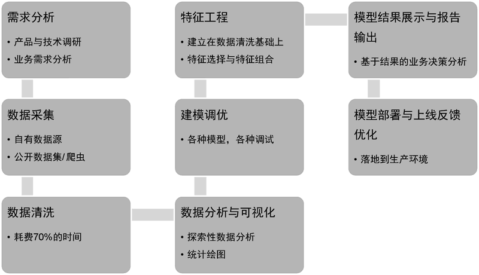

首页 > 编程笔记
机器学习介绍（非常详细）
随着人工智能技术的快速发展，如今机器学习（machine learning）这个名词说是“烂大街”也不为过。作为一门以数学计算理论为支撑的综合性学科，机器学习的范畴早已广博繁杂，以至于别人问你擅长什么，你答曰机器学习，那么大概率你是没有专长的。
在不同的细分领域、应用场景和研究方向下，每个人做的机器学习研究可能天差地别。例如：
上面提到的线性回归、卷积神经网络和强化学习，都是机器学习算法在不同场景下的应用。上层的应用千变万化，但机器学习的底层技术是不变的。
那么，什么是机器学习的底层技术呢？一是必备的数学推导能力，二是基于数据结构和算法的基本代码实现能力。
为了方便本章的行文叙述，下面通过一个简单的例子来引入机器学习。丁师傅是一家饭店的厨师，根据个人从业经验，他认为食材新鲜度、食材是否经过处理、火候、调味品用量和烹饪技术是影响一盘菜肴烹饪水平的关键因素。
要进行机器学习，最关键的是要有数据。我们根据丁师傅的经验，记录和收集了几条关于烹饪的数据，这些数据的集合称为数据集（data set），如下表所示。
我们把数据集中的一条记录（即烹饪过程中各种影响因素和结果的组合）叫作样本（sample）或者实例（instance）。影响烹饪结果的各种因素，如“食材新鲜度”和“火候”等，称为特征（feature）或者属性（attribute）。样本的数量叫作数据量（data size），特征的数量叫作特征维度（feature dimension）。
对于实际的机器学习任务，我们需要将整个数据集划分为训练集（train set）和测试集（test set），其中前者用于训练机器学习模型，而后者用于验证模型在未知数据上的效果。
假设我们要预测的目标变量是离散值，如本例中的“菜肴评价”，分为“好”“差”和“中等”，那么该机器学习任务就是一个分类（classification）问题。但如果我们想要对烹饪出来的菜肴进行量化评分，比如表 1 的数据，第一条我们评为 5 分，第二条我们评为 8 分等，这种预测目标为连续值的任务称为回归（regression）问题。
分类和回归问题可以统称为监督学习（supervised learning）问题。但当收集的数据没有具体的标签时，我们也可以仅根据输入特征来对数据进行聚类（clustering）。
聚类分析可以对数据进行潜在的概念划分，自动将上述烹饪数据划分为“好菜品”和“一般菜品”。这种无标签情形下的机器学习称为无监督学习（unsupervised learning）。
监督学习和无监督学习共同构建起了机器学习的内容框架。
机器学习的第一个要素是模型。机器学习中的模型就是要学习的决策函数或者条件概率分布，一般用假设空间（hypothesis space）F 来描述所有可能的决策函数或条件概率分布。当模型是一个决策函数时，如线性模型的线性决策函数，F 可以表示为若干决策函数的集合
当模型是一个条件概率分布时，如决策树是定义在特征空间和类空间中的条件概率分布，Fv可以表示为条件概率分布的集合
机器学习的第二个要素是策略。简单来说，就是在假设空间的众多模型中，机器学习需要按照什么标准选择最优模型。对于给定模型，模型输出 f(X) 和真实输出 Y 之间的误差可以用一个损失函数（loss function），也就是
不同的机器学习任务都有对应的损失函数，回归任务一般使用均方误差，分类任务一般使用对数损失函数或者交叉熵损失函数等。
机器学习的最后一个要素是算法。这里的算法有别于所谓的“机器学习算法”，在没有特别说明的情况下，“机器学习算法”实际上指的是模型。作为机器学习三要素之一的算法，指的是学习模型的具体优化方法。当机器学习的模型和损失函数确定时，机器学习就可以具体地形式化为一个最优化问题，可以通过常用的优化算法，比如随机梯度下降法、牛顿法、拟牛顿法等进行模型参数的优化求解。
当一个机器学习问题的模型、策略和算法都确定了，相应的机器学习方法也就确定了，因而这三者也叫“机器学习三要素”。
先来看一下监督机器学习的核心哲学。总的来说，所有监督机器学习都可以用如下公式来概括：
上面的公式就是监督机器学习中的损失函数计算公式，其中第一项为针对训练集的经验误差项，即我们常说的训练误差；第二项为正则化项，也称惩罚项，用于对模型复杂度的约束和惩罚。
所以，所有监督机器学习的核心任务无非就是正则化参数的同时最小化经验误差。多么简约的哲学啊！各类机器学习模型的差别无非就是变着方式改变经验误差项，即我们常说的损失函数。不信你看：当第一项是平方损失（square loss）时，机器学习模型便是线性回归；当第一项变成指数损失（exponential loss）时，模型则是著名的 AdaBoost（一种集成学习树模型算法）；而当损失函数为合页损失（hinge loss）时，便是大名鼎鼎的 SVM了！
综上所述，第一项“经验误差项”很重要，它能变着法儿改变模型形式，我们在训练模型时要最大限度地把它变小。但在很多时候，决定机器学习模型质量的关键通常不是第一项，而是第二项“正则化项”。正则化项通过对模型参数施加约束和惩罚，让模型时时刻刻保持对过拟合的警惕。
所以，我们再回到前面提到的监督机器学习的核心任务：正则化参数的同时最小化经验误差。通俗来讲，就是训练集误差小，测试集误差也小，模型有着较好的泛化能力；或者模型偏差小，方差也小。
但是很多时候模型的训练并不如人愿。当你在机器学习领域摸爬滚打已久时，想必更能体会到模型训练的艰辛，要想训练集和测试集的性能表现高度一致实在太难了。很多时候，我们会把经验损失（即训练误差）降到极低，但模型一到测试集上，瞬间“天崩地裂”，表现得一塌糊涂。这种情况便是我们要谈的主题：过拟合。
所谓过拟合，指在机器学习模型训练的过程中，模型对训练数据学习过度，将数据中包含的噪声和误差也学习了，使得模型在训练集上表现很好，而在测试集上表现很差的一种现象。机器学习简单而言就是归纳学习数据中的普遍规律，一定得是普遍规律，像这种将数据中的噪声也一起学习了的，归纳出来的便不是普遍规律，而是过拟合。
欠拟合、正常拟合与过拟合的表现形式如下图所示：
鉴于过拟合十分普遍并且关乎模型的质量，笔者认为，在机器学习实践中，与过拟合长期坚持不懈地斗争是机器学习的核心。而机器学习的一些其他问题，诸如特征工程、扩大训练集数量、算法设计和超参数调优等都是为防止过拟合这个核心问题而服务的。
需求分析的主要目的是为项目确定方向和目标，为整个项目的顺利开展制订计划和设立里程碑。我们需要明确机器学习目标，输入是什么，目标输出是什么，是回归任务还是分类任务，关键性能指标都有哪些，是结构化的机器学习任务还是基于深度学习的图像和文本任务，市面上项目相关的产品都有哪些，对应的SOTA（state of the art）模型有哪些，相关领域的前沿研究和进展都到什么程度了，项目有哪些有利条件和风险。这些都需要在需求分析阶段认真考虑。
在数据资源相对丰富的领域，比如电商、O2O、直播以及短视频等行业，企业一般会有自己的数据源，业务部门提出相关需求后，数据工程师可直接根据需求从数据库中提取数据。但对于本身数据资源就贫乏或者数据隐私性较强的行业，比如医疗行业，一般很难获得大量数据，并且医疗数据的标注也比较专业化，高质量的医疗标注数据尤为难得。
对于这种情况，我们可以先获取一些公开数据集或者竞赛数据集进行算法开发。还有一种情况是目标数据在网页端，比如我们想了解杭州二手房价格信息，找出影响杭州二手房价格的关键因素，这时候可能需要使用像爬虫一类的数据采集技术获取相关数据。
另外，结合业务的精细化特征工程工作比模型调参更能改善模型表现。建模调优与特征工程之间本身是个交互性的过程，在实际工作中我们可以一边进行调参，一边进行特征设计，交替进行，相互促进，共同改善模型表现。
如果新上线的推荐算法能让用户的广告点击率上升 0.5%，为企业带来的收益也是巨大的。该阶段更多的是需要进行工程方面的一些考量，是以 Web 接口的形式提供给开发部门，还是以脚本的形式嵌入到软件中，后续如何收集反馈并提供产品迭代参考，这些都是需要在模型部署和上线之后考虑的。
在不同的细分领域、应用场景和研究方向下，每个人做的机器学习研究可能天差地别。例如：
- 甲同学即将毕业，他想用线性回归来预测应届毕业生在机器学习岗位上的薪资水平；
- 乙同学任职于一家医疗技术公司，他想用卷积神经网络来预测患者肺部是否发生病变；
- 丙同学是一家游戏公司的算法工程师，他的工作是利用强化学习来进行游戏开发。
上面提到的线性回归、卷积神经网络和强化学习，都是机器学习算法在不同场景下的应用。上层的应用千变万化，但机器学习的底层技术是不变的。
那么，什么是机器学习的底层技术呢？一是必备的数学推导能力，二是基于数据结构和算法的基本代码实现能力。
为了方便本章的行文叙述，下面通过一个简单的例子来引入机器学习。丁师傅是一家饭店的厨师，根据个人从业经验，他认为食材新鲜度、食材是否经过处理、火候、调味品用量和烹饪技术是影响一盘菜肴烹饪水平的关键因素。
机器学习相关的术语
机器学习的官方定义为：系统通过计算手段利用经验来改善自身性能的过程。更具体的说法是，机器学习是一门通过分析和计算数据来归纳出数据中普遍规律的学科。要进行机器学习，最关键的是要有数据。我们根据丁师傅的经验，记录和收集了几条关于烹饪的数据，这些数据的集合称为数据集（data set），如下表所示。
| 食材新鲜度 | 食材是否经过处理 | 火候 | 调味品用量 | 烹饪技术 | 菜肴评价 |
| 新鲜 | 是 | 偏大 | 偏大 | 熟练 | 中等 |
| 不够新鲜 | 否 | 适中 | 适中 | 一般 | 好 |
| 新鲜 | 是 | 适中 | 适中 | 熟练 | 好 |
| 新鲜 | 否 | 适中 | 偏小 | 一般 | 差 |
| 不够新鲜 | 是 | 偏小 | 适中 | 一般 | 差 |
我们把数据集中的一条记录（即烹饪过程中各种影响因素和结果的组合）叫作样本（sample）或者实例（instance）。影响烹饪结果的各种因素，如“食材新鲜度”和“火候”等，称为特征（feature）或者属性（attribute）。样本的数量叫作数据量（data size），特征的数量叫作特征维度（feature dimension）。
对于实际的机器学习任务，我们需要将整个数据集划分为训练集（train set）和测试集（test set），其中前者用于训练机器学习模型，而后者用于验证模型在未知数据上的效果。
假设我们要预测的目标变量是离散值，如本例中的“菜肴评价”，分为“好”“差”和“中等”，那么该机器学习任务就是一个分类（classification）问题。但如果我们想要对烹饪出来的菜肴进行量化评分，比如表 1 的数据，第一条我们评为 5 分，第二条我们评为 8 分等，这种预测目标为连续值的任务称为回归（regression）问题。
分类和回归问题可以统称为监督学习（supervised learning）问题。但当收集的数据没有具体的标签时，我们也可以仅根据输入特征来对数据进行聚类（clustering）。
聚类分析可以对数据进行潜在的概念划分，自动将上述烹饪数据划分为“好菜品”和“一般菜品”。这种无标签情形下的机器学习称为无监督学习（unsupervised learning）。
监督学习和无监督学习共同构建起了机器学习的内容框架。
机器学习三要素
按照统计机器学习的观点，任何一个机器学习方法都是由模型（model）、策略（strategy）和算法（algorithm）三个要素构成的，具体可理解为机器学习模型在一定的优化策略下使用相应求解算法来达到最优目标的过程。机器学习的第一个要素是模型。机器学习中的模型就是要学习的决策函数或者条件概率分布，一般用假设空间（hypothesis space）F 来描述所有可能的决策函数或条件概率分布。当模型是一个决策函数时，如线性模型的线性决策函数，F 可以表示为若干决策函数的集合
F={f|Y=f(X)}，其中 X 和 Y 为定义在输入空间和输出空间中的变量。当模型是一个条件概率分布时，如决策树是定义在特征空间和类空间中的条件概率分布，Fv可以表示为条件概率分布的集合
F={P|P=Y|X}，其中 X 和 Y 为定义在输入空间和输出空间中的随机变量。机器学习的第二个要素是策略。简单来说，就是在假设空间的众多模型中，机器学习需要按照什么标准选择最优模型。对于给定模型，模型输出 f(X) 和真实输出 Y 之间的误差可以用一个损失函数（loss function），也就是
L(Y, F(X))来度量。不同的机器学习任务都有对应的损失函数，回归任务一般使用均方误差，分类任务一般使用对数损失函数或者交叉熵损失函数等。
机器学习的最后一个要素是算法。这里的算法有别于所谓的“机器学习算法”，在没有特别说明的情况下，“机器学习算法”实际上指的是模型。作为机器学习三要素之一的算法，指的是学习模型的具体优化方法。当机器学习的模型和损失函数确定时，机器学习就可以具体地形式化为一个最优化问题，可以通过常用的优化算法，比如随机梯度下降法、牛顿法、拟牛顿法等进行模型参数的优化求解。
当一个机器学习问题的模型、策略和算法都确定了，相应的机器学习方法也就确定了，因而这三者也叫“机器学习三要素”。
机器学习核心
机器学习的目的在于训练模型，使其不仅能够对已知数据而且能对未知数据有较好的预测能力。当模型对已知数据预测效果很好但对未知数据预测效果很差的时候，就引出了机器学习的核心问题之一：过拟合（over-fitting）。先来看一下监督机器学习的核心哲学。总的来说，所有监督机器学习都可以用如下公式来概括：
上面的公式就是监督机器学习中的损失函数计算公式，其中第一项为针对训练集的经验误差项，即我们常说的训练误差；第二项为正则化项，也称惩罚项，用于对模型复杂度的约束和惩罚。
所以，所有监督机器学习的核心任务无非就是正则化参数的同时最小化经验误差。多么简约的哲学啊！各类机器学习模型的差别无非就是变着方式改变经验误差项，即我们常说的损失函数。不信你看：当第一项是平方损失（square loss）时，机器学习模型便是线性回归；当第一项变成指数损失（exponential loss）时，模型则是著名的 AdaBoost（一种集成学习树模型算法）；而当损失函数为合页损失（hinge loss）时，便是大名鼎鼎的 SVM了！
综上所述，第一项“经验误差项”很重要，它能变着法儿改变模型形式，我们在训练模型时要最大限度地把它变小。但在很多时候，决定机器学习模型质量的关键通常不是第一项，而是第二项“正则化项”。正则化项通过对模型参数施加约束和惩罚，让模型时时刻刻保持对过拟合的警惕。
所以，我们再回到前面提到的监督机器学习的核心任务：正则化参数的同时最小化经验误差。通俗来讲，就是训练集误差小，测试集误差也小，模型有着较好的泛化能力；或者模型偏差小，方差也小。
但是很多时候模型的训练并不如人愿。当你在机器学习领域摸爬滚打已久时，想必更能体会到模型训练的艰辛，要想训练集和测试集的性能表现高度一致实在太难了。很多时候，我们会把经验损失（即训练误差）降到极低，但模型一到测试集上，瞬间“天崩地裂”，表现得一塌糊涂。这种情况便是我们要谈的主题：过拟合。
所谓过拟合，指在机器学习模型训练的过程中，模型对训练数据学习过度，将数据中包含的噪声和误差也学习了，使得模型在训练集上表现很好，而在测试集上表现很差的一种现象。机器学习简单而言就是归纳学习数据中的普遍规律，一定得是普遍规律，像这种将数据中的噪声也一起学习了的，归纳出来的便不是普遍规律，而是过拟合。
欠拟合、正常拟合与过拟合的表现形式如下图所示：

图 1 欠拟合、正常拟合与过拟合
图 1 欠拟合、正常拟合与过拟合
鉴于过拟合十分普遍并且关乎模型的质量，笔者认为，在机器学习实践中，与过拟合长期坚持不懈地斗争是机器学习的核心。而机器学习的一些其他问题，诸如特征工程、扩大训练集数量、算法设计和超参数调优等都是为防止过拟合这个核心问题而服务的。
机器学习流程
一个完整的机器学习项目的流程，具体如下图所示：

图 2 机器学习基本流程
图 2 机器学习基本流程
1) 需求分析
很多算法工程师可能觉得需求分析没有技术含量，因而不太重视项目启动前的需求分析工作。这对于一个项目而言其实是非常危险的。需求分析的主要目的是为项目确定方向和目标，为整个项目的顺利开展制订计划和设立里程碑。我们需要明确机器学习目标，输入是什么，目标输出是什么，是回归任务还是分类任务，关键性能指标都有哪些，是结构化的机器学习任务还是基于深度学习的图像和文本任务，市面上项目相关的产品都有哪些，对应的SOTA（state of the art）模型有哪些，相关领域的前沿研究和进展都到什么程度了，项目有哪些有利条件和风险。这些都需要在需求分析阶段认真考虑。
2) 数据采集
一个机器学习项目要开展下去，最关键的资源就是数据。在数据资源相对丰富的领域，比如电商、O2O、直播以及短视频等行业，企业一般会有自己的数据源，业务部门提出相关需求后，数据工程师可直接根据需求从数据库中提取数据。但对于本身数据资源就贫乏或者数据隐私性较强的行业，比如医疗行业，一般很难获得大量数据，并且医疗数据的标注也比较专业化，高质量的医疗标注数据尤为难得。
对于这种情况，我们可以先获取一些公开数据集或者竞赛数据集进行算法开发。还有一种情况是目标数据在网页端，比如我们想了解杭州二手房价格信息，找出影响杭州二手房价格的关键因素，这时候可能需要使用像爬虫一类的数据采集技术获取相关数据。
3) 数据清洗
由于公开数据集和一些竞赛数据集非常“干净”，有的甚至可以直接用于模型训练，所以一些机器学习初学者认为只需专注于模型与算法设计就可以了。其实不然。在生产环境下，我们拿到的数据都会比较“脏”，以至于需要花大量时间清洗数据，有些人甚至认为数据清洗和特征工程要占用项目 70% 以上的时间。4) 数据分析与可视化
数据清洗完后，一般不建议直接对数据进行训练。这时候我们对于要训练的数据还是非常陌生的。数据都有哪些特征？是否有很多类别特征？目标变量分布如何？各自变量与目标变量的关系是否需要可视化展示？数据中各变量缺失值的情况如何？怎样处理缺失值？上述问题都需要在探索性数据分析（exploratory data analysis，EDA）和数据可视化过程中找到答案。5) 建模调优与特征工程
数据初步分析完后，对数据就会有一个整体的认识，一般就可以着手训练机器学习模型了。但建模通常不是一锤子买卖，训练完一个基线（baseline）模型之后，需要花大量时间进行模型调参和优化。另外，结合业务的精细化特征工程工作比模型调参更能改善模型表现。建模调优与特征工程之间本身是个交互性的过程，在实际工作中我们可以一边进行调参，一边进行特征设计，交替进行，相互促进，共同改善模型表现。
6) 模型结果展示与分析报告
经过一定的特征工程和模型调优之后，一般会有一个阶段性的最优模型结果，模型对应的关键性能指标都会达到最优状态。这时候需要通过一定的方式呈现模型，并对模型的业务含义进行解释。如果需要给上级领导和业务部门做决策参考，一般还需要生成一份有价值的分析报告。7) 模型部署与上线反馈优化
给出一份分析报告不是一个机器学习项目的最终目的，将模型部署到生产环境并能切实产生收益才是机器学习的最终价值所在。如果新上线的推荐算法能让用户的广告点击率上升 0.5%，为企业带来的收益也是巨大的。该阶段更多的是需要进行工程方面的一些考量，是以 Web 接口的形式提供给开发部门，还是以脚本的形式嵌入到软件中，后续如何收集反馈并提供产品迭代参考，这些都是需要在模型部署和上线之后考虑的。
关注公众号「站长严长生」，在手机上阅读所有教程，随时随地都能学习。内含一款搜索神器，免费下载全网书籍和视频。

微信扫码关注公众号